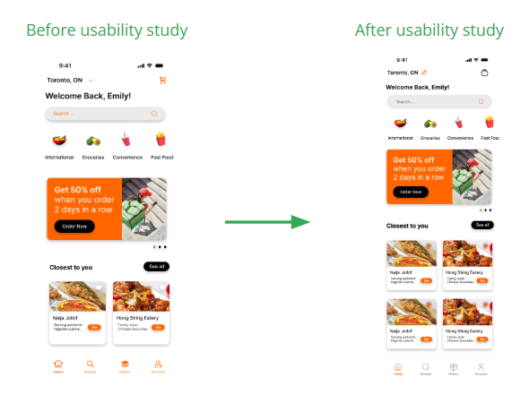
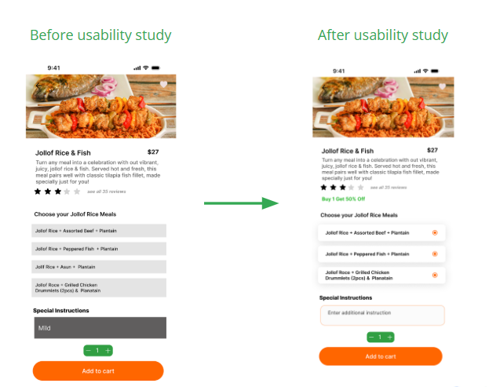

QuickEats
A food app with better deals, accurate tracking, and transparent pricing.
Project Overview
The Problem
Existing food delivery apps leave users frustrated due to unreliable order tracking, poor customer service, and unexpected price changes at checkout.
The Goal
QuickEats aims to create a reliable, user-friendly experience by offering accurate delivery tracking, clear pricing, and responsive customer support with a focus on value.
Understanding the User
Through user interviews, surveys, and feedback analysis, we gathered insights into user pain points and expectations. This research allowed us to clearly define their challenges and goals, forming the foundation for our design decisions.
User Persona

Kari Gachugu, 21
“I need to order affordable and diverse food quickly between classes.”- Bio: A busy university student in Toronto who prioritizes time and convenience during exams.
- Goals: Quick access to affordable international cuisine (Korean, Thai, Indian) and saving money via discounts.
- Frustrations: High delivery fees that outweigh meal costs and orders taking longer than 30 minutes.
Pain Points
After synthesizing our research, we began to see clear patterns in user behavior and expectations. By clustering similar feedback, we identified the most pressing pain points and translated them into actionable insights that would guide our design decisions
Delivery Speed
Users expect fast delivery; anything over 30 minutes is seen as too slow for a busy schedule.
Cost Sensitivity
Users are highly sensitive to delivery fees and value promotions, deals, and subsidized costs.
Support & Tracking
Frustrating navigation and poor customer support experiences reduce ease of use and trust.
Starting the Design
Based on user insights, I and the team began sketching initial wireframes to explore layout and functionality that addressed key pain points.
Digital Wireframes (Lo-Fi)
Usability Study
I and the team conducted studies to identify friction points that reduced user return rates and improved overall navigation.
Key Findings
- Support Access: Provided direct access to customer support within the order flow for faster resolution.
- Dedicated Deals: Included dedicated promotion pages to satisfy the user's focus on affordability.
- Location Navigation: Moved the location search feature to a more prominent area on the homescreen for better accessibility.
Refining the Design
Mockups & Iteration
Before & After Usability Study
 High-Fidelity Prototype

Going Forward
Takeaways
I learned that transparency in pricing and delivery is the foundation of user trust in food delivery platforms.
Next Steps
I plan to conduct further testing on the order tracking accuracy and integrate more personalized restaurant recommendations.